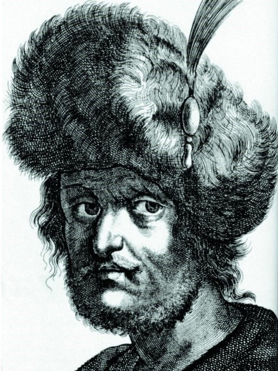
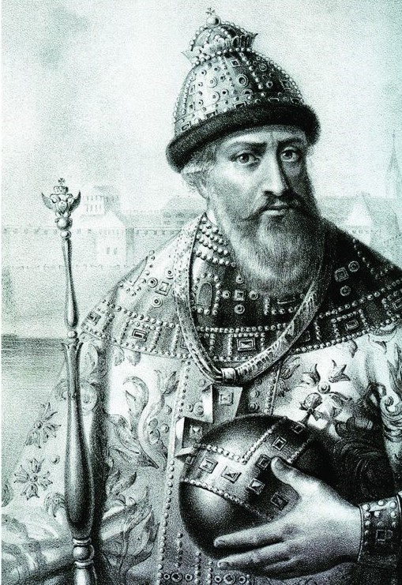

|  |  | Смутное времяСмутное время, или Смута — период в истории России с 1598 года по 1613 год (согласно некоторым точкам зрения по 1618 год), ознаменованный стихийными бедствиями, сопровождающийся многочисленными случаями самозванства и внешней интервенцией, гражданскими, русско-польскими и русско-шведскими войнами, тяжелейшими государственно-политическим и социально-экономическим кризисами |
Сложность толкования Смуты
Смутное время было очень неудобным для советских историков. Дореволюционная историография не создала строгую концепцию смуты. Есть схемы Ключевского и Платонова (мы позже поговорим о них) - они эмпирически очень неплохо отражают реальность, но концепции Смуты они не дают. Потому что для того чтобы разработать концепцию Смутного времени в России нужно сначала разработать концепцию русской истории и концепцию самодержавия. Но этого не было. У советских историков совсем дела плохо обстояло с концепцией Смуты. Собственно никакой Смуты советские историки не изучали. Пример профессора Андрея Фурсова:
когда сдавал русскую историю, вернее историю СССР, в билетах не было вопроса "Смутное время". В билетах было два совершенно разных вопроса: «Восстание под руководством Ивана Болотникова» и «Иностранная интервенция в начале 17 века».
То есть Смуту рассеяли, словно ее и не было. И понятно почему. Дело в том, что в Смутном времени для советских историков в противоречие пришло буквально все. С классовой точки зрения советский историк должен был стоять на стороне Ивана Болотникова, потому что он боролся против эксплуататоров. Но дело в том, что Иван Болотников был человеком Лжедмитрия 1 (об этом мы ниже будем говорить), а Лжедмитрий был связан с поляками и шведами. И получается, что восстание Болотникова это элемент деятельности Лжедмитрия по предательству страны. То есть, это то, что бьет по государственному строю России. С патриотической точки зрения советскому историку никак нельзя было быть на стороне Болотникова. Поэтому решили сделать очень просто. Смутное время интегрально рассекли: восстание Болотникова это одно, а интервенция - другое. Лжедмитрий вообще третье. Но это была абсолютная фальшивка. Всё было намного сложнее. И Все это было очень тесно связано, и никакого Болотникова бы не было без Лжедмитрия и Смуты.
Чем фактически была Смута в истории России
Смута, безусловно, была революционным событием. Чем принципиально революция отличается от восстания? Кто знает, кстати, когда термин "революция" появился, как политический? Подсказка - есть какая-то связь между словом "революция" и "револьвер"? Помимо того что в революциях используются револьверы... Есть какая-то связь в названиях "революция" и "револьвер"? Дело касается того, что барабан "крутится". Сначала революция появился в 1688 году во время, так называемой, "Славной революции" в Англии, когда как бы все вернулось на круги своя. То есть изначально революцией назывался поворот на 360 градусов. Совершили оборот и вернулись на свои места с некоторыми изменениями. Но со времен французской революции 1789-1799 годов революциями стали называть поворот не на 360 градусов, а на 180. То есть повернулись, но не вернулась в предыдущую точку.
Любые народные движения можно разделить на 3 категории:
- дворцовые перевороты. Это разборки элиты.
- восстания и бунты. Активное участие принимает население.
- революции. Когда происходят революции, происходит следующее - часть элиты входит в союз с частью населения, и бросает его против другой части элиты. Так что на какой-то момент верхушка самая начинает выражать интересы общества, а не только свои. Поэтому на короткий момент революции происходит единение. Потом в большинстве случаев элита обманывает общество.
И в Смутном времени начала 17 века, безусловно, видны некоторые революционные черты, тем более что после Смуты окончательно встал на ноги самодержавно-крепостнический строй, которого до этого на Руси не было.